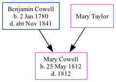

Mary Ann Cowell 1812 - 1812
[ Home ] | [ Calendar ] | [ Surnames Index ] | [ Family History ]The eldest of 3 children of Benjamin Cowell and Mary Taylor, Mary Cowell, the first cousin four-times-removed on the mother's side of <a href="I1.html">Nigel Horne</a>, was born in St Lawrence, Thanet, Kent, England on May 25, 1812<span class="citation">1,2</span> and baptized there on Jun 21, 1812.<p>She died in 1812 and was buried in St Lawrence on Jul 10, 1812<span class="citation">3</span>.
Parents
- Benjamin was born on Jan 2, 1780
Citations
- Kent, Canterbury Archdeaconry baptisms 1538-1912 - Findmypast
- Kent, Canterbury Archdeaconry burials 1538-1988 - Findmypast
- Kent, Canterbury Archdeaconry burials 1538-1988 - Findmypast
Media
Kent, Canterbury Archdeaconry burials 1538-1988 - GBPRS/CANT/D/95273259
Kent, Canterbury Archdeaconry baptisms 1538-1912 - GBPRS/CANT/B/96398437
Family Tree
Generated by Ged2Site. Last updated on Jul 20, 2025